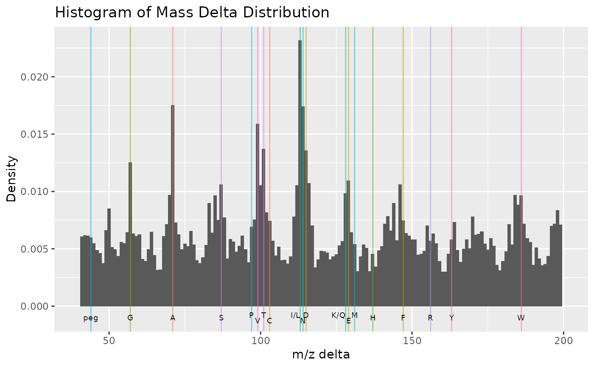

plotMzDelta-methods.RdThe m/z delta plot illustrates the suitability of MS2 spectra for identification by plotting the m/z differences of the most intense peaks. The resulting histogram should optimally shown outstanding bars at amino acid residu masses. The plots have been described in Foster et al 2011.
Only a certain percentage of most intense MS2 peaks are taken into
account to use the most significant signal. Default value is 10% (see
percentage argument). The difference between peaks is then
computed for all individual spectra and their distribution is plotted
as a histogram where single bars represent 1 m/z differences. Delta
m/z between 40 and 200 are plotted by default, to encompass the
residue masses of all amino acids and several common contaminants,
although this can be changes with the xlim argument.
In addition to the processing described above, isobaric reporter tag
peaks (see the reporters argument) and the precursor peak (see
the precMz argument) can also be removed from the MS2 spectrum,
to avoid interence with the fragment peaks.
Note that figures in Foster et al 2011 have been produced and optimised for centroided data. Application of the plot as is for data in profile mode has not been tested thoroughly, although the example below suggest that it might work.
The methods make use the ggplot2 system. An object of class
ggplot is returned invisibly.
Most of the code for plotMzDelta has kindly been contributed by Guangchuang Yu.
| object | An object of class |
|---|---|
| reporters | An object of class class
|
| subset | A numeric between 0 and 1 to use a subset of
|
| percentage | The percentage of most intense peaks to be used for the plot. Default is 0.1. |
| precMz | A |
| precMzWidth | A |
| bw | A |
| xlim | A |
| withLabels | A |
| size | A |
| plot | A |
| verbose | A |
signature(object = "MSnExp", ...)Plots and (invisibly) returns the m/z delta histogram.
The plotDensity and plot2d methods for
other QC plots.
Foster JM, Degroeve S, Gatto L, Visser M, Wang R, Griss J, Apweiler R, Martens L. "A posteriori quality control for the curation and reuse of public proteomics data." Proteomics, 2011 Jun;11(11):2182-94. doi:10.1002/pmic.201000602. Epub 2011 May 2. PMID: 21538885
mzdplot <- plotMzDelta(itraqdata, subset = 0.5, reporters = iTRAQ4, verbose = FALSE, plot = FALSE) ## let's retrieve peptide sequence information ## and get a table of amino acids peps <- as.character(fData(itraqdata)$PeptideSequence) aas <- unlist(strsplit(peps,"")) ## table of aas table(aas)#> aas #> A C D E F G H I K L M N P Q R S T V W Y #> 70 1 53 49 12 53 6 32 41 63 16 26 20 29 14 36 47 58 3 13#> Warning: Removed 2 rows containing missing values (geom_bar).#> Warning: Removed 2 rows containing missing values (geom_vline).#> Warning: Removed 2 rows containing missing values (geom_text).